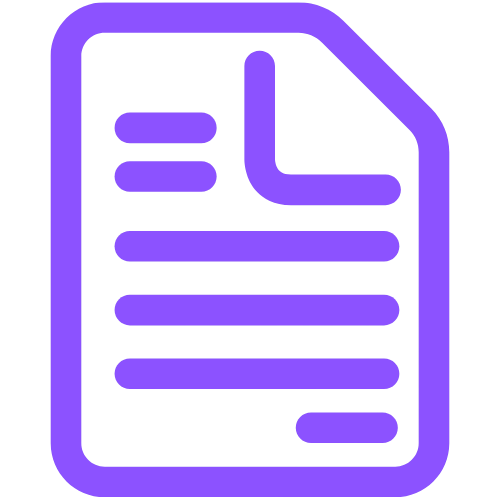

Lesson 1
Welcome to Coding With Lily! I'm so glad you are here!
In this first lesson, we are going to:
Activities
Start with the first activity and then the next activity until you finish. Some videos are good for watching and others are good for following along. Some activities may have you follow along with a paper and pencil for unplugged activities and others will have you coding in Scratch. Remember you can pause or watch these videos as many times as you want.
| Activity | Description |
|---|---|
| 1.0 Survey | Please share your thoughts and feelings about computers by clicking on the paper icon. |
| 1.1 Welcome | Watch this video to hear about what Coding With Lily is all about. |
| 1.2 Scratch | Introducing... Scratch! |
| 1.3 Create an account in Scratch | 1. Watch this video to see how we create an account in Scratch.
2. Click on this link to create a Scratch account under our class: http://scratch.mit.edu/signup/hmxh9e2mc Be sure to follow the steps from the video. Remember to use a fun username (and not your real name). |
| 1.4 Explore Scratch | Watch this video to see how Scratch is organized. |
| 1.5 Scavenger Hunt | Time for a Scavenger Hunt in Scratch. Part of the fun in learning a new programming language is the discovery part! Try to find these items below in Scratch. When you're ready or need a little help, check out the videos to see.
|
| 1.5a Scavenger Hunt Results |
Once you've attempted the Scavenger Hunt, watch the videos below to see one way of doing it. 1. Add a watermelon
2. Add a backdrop
3. A rabbit running place
|
| 1.6 Animation | Watch this video to see how animation, art, and Computer Science are related. Interview: |
Next Lesson
Be sure to save your work for this lesson. We'll keep adding to your project in Lesson 2!